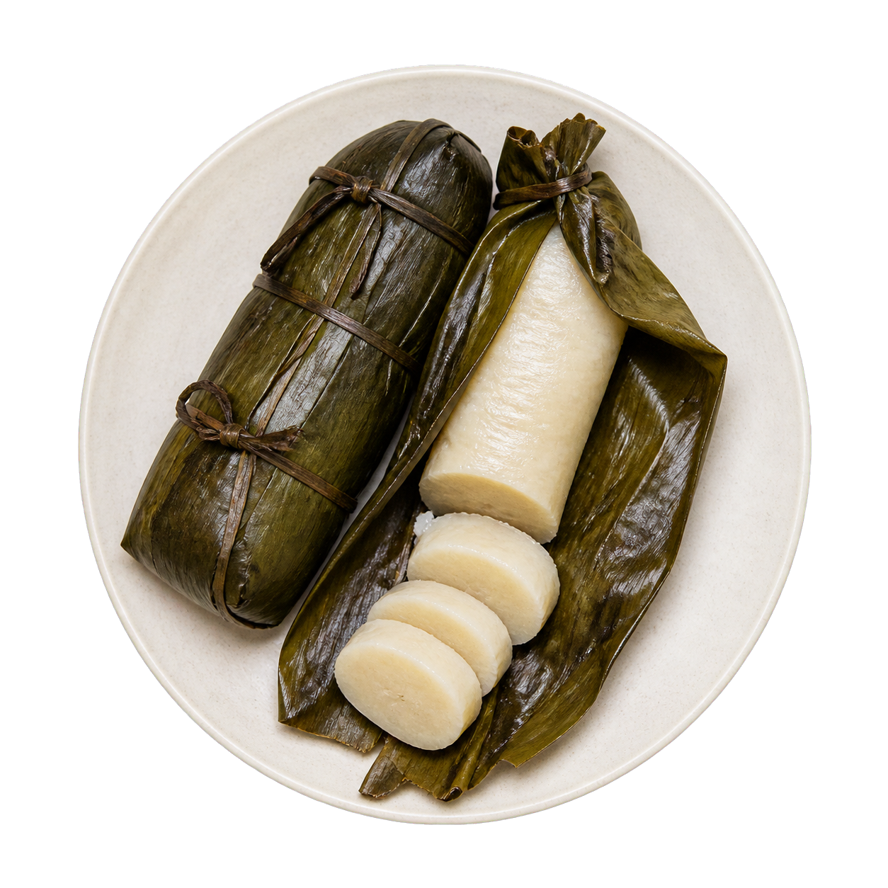
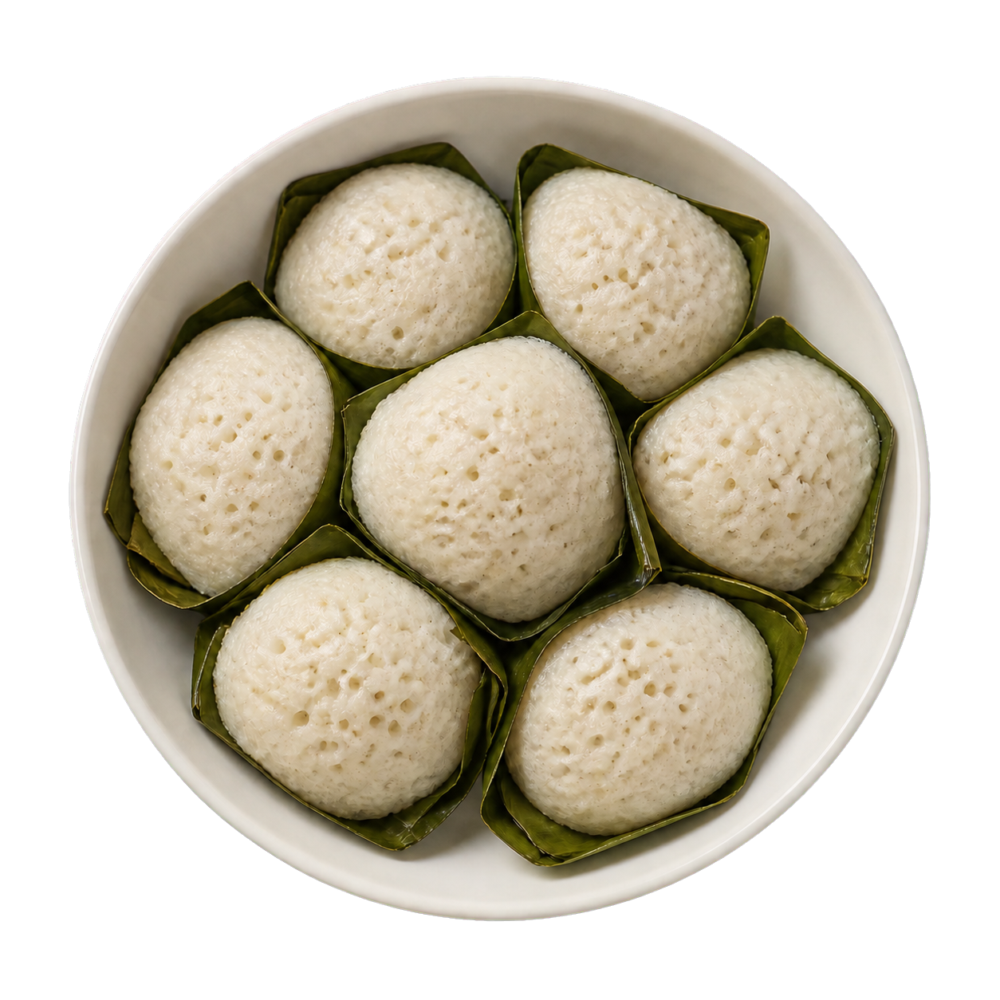
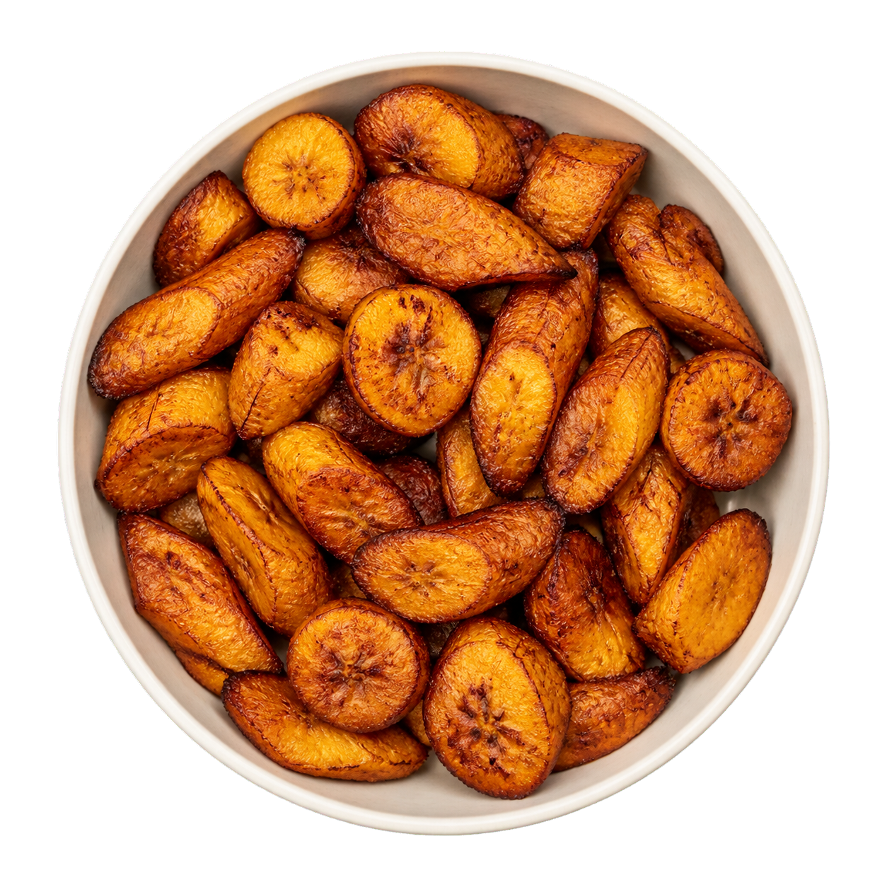
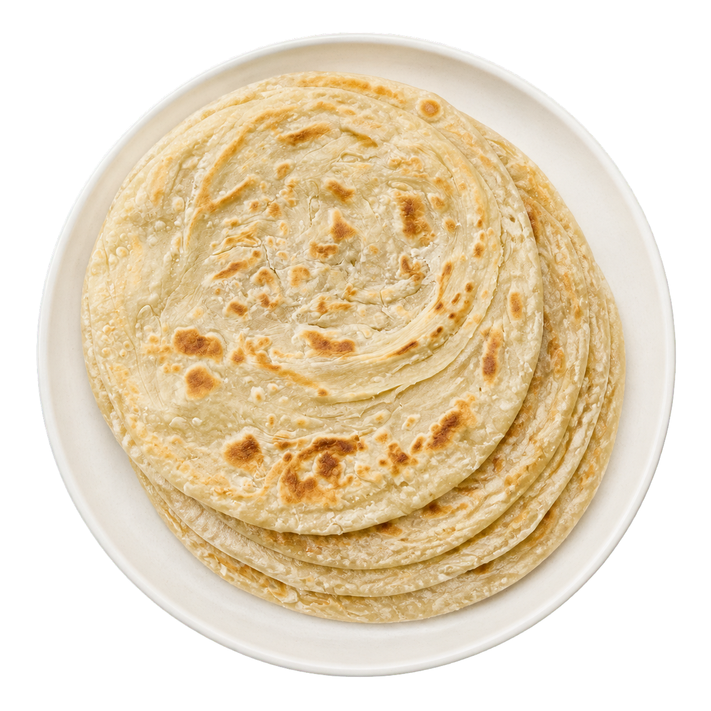
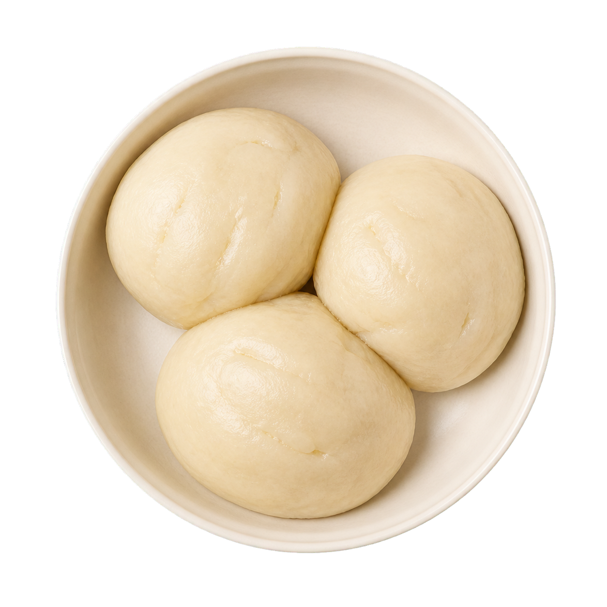

Chikwangue (Kwanga)
- 20 minPréparation
- 1 h à 1 h 30Cuisson
- 3 à 4 joursTrempage
- 4 à 6 personnesPortions
Une pâte de manioc fermenté, roulée dans des feuilles et cuite à la vapeur, dense et un peu élastique. C'est un accompagnement de base dans les deux Congo, qui tient bien au corps.
Ingrédients
- 1 kg de pâte de manioc fermentée prête à l'emploi (rayon africain)
- OU 2 kg de manioc frais à faire fermenter soi-même
- Feuilles de bananier (ou feuilles de maranta)
- Ficelle de cuisine alimentaire
- Eau
Ustensiles
Grand récipient (trempage), mortier et pilon (ou mixeur), couteau, feuilles de bananier, ficelle de cuisine, grande marmite (ou panier vapeur)
Préparation
- Étape 1
Si vous partez du manioc frais :
- Étape 2
Éplucher le manioc, le laver, le couper en gros tronçons et le faire tremper dans un grand volume d'eau pendant 3 à 4 jours à température ambiante. L'eau devient trouble et le manioc ramollit : c'est la fermentation.
- Étape 3
Rincer abondamment à l'eau claire, égoutter, puis retirer les fibres dures du centre des morceaux.
- Étape 4
Piler le manioc au mortier (ou mixer par petites quantités) jusqu'à obtenir une pâte lisse et homogène, sans morceaux.
- Étape 5
Préparation et cuisson (commune aux deux méthodes) :
- Étape 6
Passer rapidement les feuilles de bananier au-dessus d'une flamme (ou les ébouillanter) pour les assouplir et éviter qu'elles ne se déchirent. Les essuyer et les couper en rectangles d'environ 20 cm.
- Étape 7
Déposer 3 à 4 grosses cuillères de pâte au centre d'une feuille. Replier la feuille pour former un boudin bien compact, puis l'envelopper d'une seconde feuille dans l'autre sens. Ficeler solidement à plusieurs endroits.
- Étape 8
Ranger les boudins dans une grande marmite. Les couvrir d'eau (ou les cuire à la vapeur) et laisser cuire à petits bouillons 1 h à 1 h 30.
- Étape 9
Laisser tiédir, puis retirer les feuilles. La chikwangue doit être ferme, dense et légèrement élastique. Servir en tranches avec du poisson, de la viande en sauce ou du saka-saka.
Voir aussi

Ablo45 minVoir la recette
Alloco25 minVoir la recette
Chapati40 minVoir la recette
Fufu (Foufou)50 minVoir la recetteFaites glisser pour voir plus